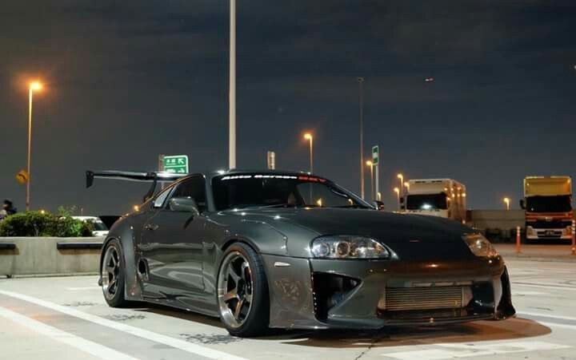
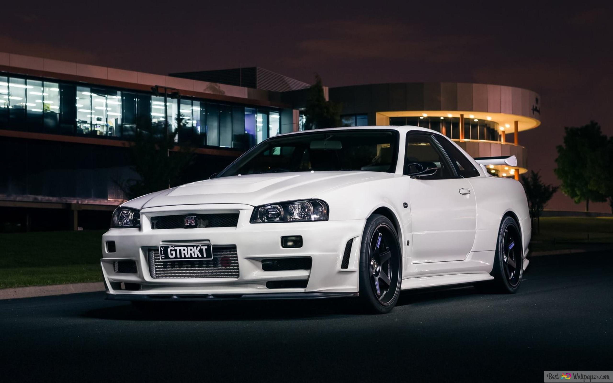
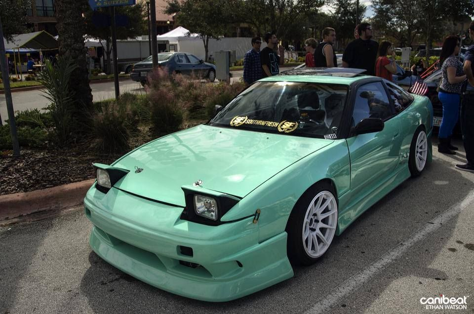

O Toyota Supra é um automóvel desportivo produzido pela fabricante japonesa Toyota entre 1978 e 2002, e desde 2019 até o presente. O nome "Supra" é derivado do prefixo latino, que significa "acima", "ultrapassar" ou "ir além". O Supra possui linhas agressivas e um aerofólio para gerar sustentação negativa e dar mais esportividade ao design do carro. O Supra é equipado com muita tecnologia, dispõe de controle de tração e uma excelente capacidade de frenagem.
O Skyline GT-R R34 é uma versão esportiva de grande prestígio do Nissan Skyline. A sigla GT-R surgiu depois de uma vitória da Nissan em 1964 com o S54 2000 GT-B. Em 1973 o modelo GT-R deixou de ser produzido. 16 anos depois a Nissan traz a sigla GT-R de volta com o modelo Nissan Skyline GT-R R32. A geração R32, também chamada de Godzila, foi até 1994, ano em que foi substituída pelo R33 que muitos reclamaram devido ao peso e tamanho. Em 1998 o R33 foi substituído pelo R34, o mais perfeito GT-R devido a potencia do R33 e tamanho reduzido próximo ao R32. Sua produção foi interrompida em 2002.
O Nissan 240SX é um coupé médio, produzido pela Nissan entre 1989 e 1998. Seu principal foco foi o mercado estadunidense, enquanto seu similar, o Nissan Silvia, explorou os mercados europeu e japonês. O 240SX está intimamente relacionado a outros veículos baseados na plataforma S , como o Silvia e o 180SX do mercado japonês e o 200SX do mercado europeu . Embora seus nomes sejam semelhantes, o 240SX não tem relação com o 240Z ou o 280ZX .
